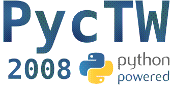

Python 社群要開家聚囉！

◎ 時間：2008/06/15 (日)
◎ 地點：台北市民生東路四段 133 號 8 樓 808 會議室
◎ 費用：免費 (只提供飲料，請參與者自備零食，如乖乖、豆乾等。)
◎ 網址：https://wiki.python.org.tw/PycTW2008
(社群介紹)
網址：https://wiki.python.org.tw/
IRC頻道：irc://irc.freenode.net/#python.tw（utf8）
討論區：https://groups.google.com/group/pythontw
簡稱為 PyTUG 的 Python 台灣使用者群組，集合了台灣 Python 語言的使用者和愛好者，在台灣推廣 Python 程式語言。並提供 Python 語言使用者一個交流場域，讓 Python 使用者能在互相切磋琢磨中成長。
pot 是 python.org.tw 這個網域名稱的縮寫，而 PyTUG 的 wiki 和 planet 也都架設在 python.org.tw 的子網域之下，故 PyTUG 的成員常以 pot 指稱 PyTUG 所提供的網路服務，及所服務的線上社群。此處沿用此一習慣，將 PyTUG 的 wiki 網站、planet 網站稱為 wiki.pot 與 planet.pot。而主機及頻寬資源，係自由軟體鑄造場所提供。
pot 在 Google group 上申請有 python.tw 此 group（以下簡稱 python.tw ggroup）。建立此 group 的目的是為 PyTUG 提供非同步的討論環境。同時，python.tw ggroup 也具有公告與訊息紀錄的功能。PyTUG 社群線上服務的各項更新，大多會公佈在 python.tw ggroup 上。